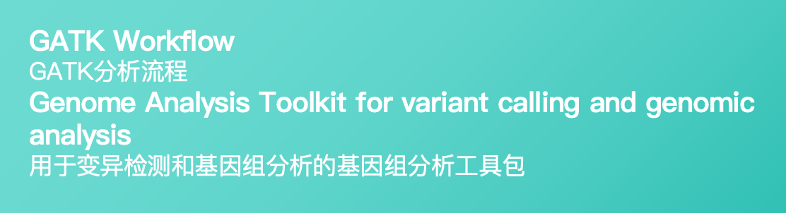

GATK Workflow Trigger
For private repositories - 私有仓库工作流触发器
Input path (BAM files)
*
:
Path to folder containing BAM files / 包含BAM文件的文件夹路径
Output path (VCF files)
*
:
Path to store output VCF files / 存储输出VCF文件的路径
Reference genome path
*
:
Path to reference genome FA files / 参考基因组FA文件路径
Job name
*
:
Thread number
*
:
Run location
*
:
Specify the runner group (e.g. pipeline) / 指定运行器组(如 pipeline)
Secret key
*
:
Required for private repositories. Create token with "repo" scope at:
GitHub Token Settings
私有仓库必须提供Token，请创建具有"repo"权限的Token:
GitHub Token 创建页面
GATK Workflow / GATK分析流程
Check Run Status / 查看运行状态
See Results / 查看结果